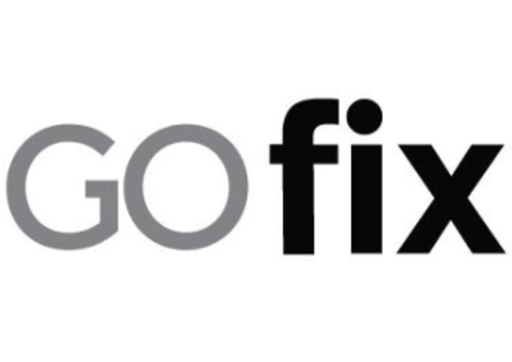

Lazada
The leading eCommerce platform in Southeast Asia, and the regional flagship platform of the Alibaba Group.
- As a Product Management intern, I supported the Campaigns and Marketing Mechanism team.
- I've conducted user interviews and formulated recommendations to address user pain points.
- I've also designed mockups on Sketch for new features in Lazada's seller center and internal tools platform.
- December 2020 - March 2021
Gojek
Southeast Asia’s leading on-demand, multi-service tech platform providing access to a wide range of services such as transport, payments and food delivery.
- As a Business Intelligence intern, I provided analytical support to the various business units in Gojek Singapore.
- I've developed end-to-end dashboards using Google BigQuery, Tableau and Google Data Studio to derive key insights for the respective stakeholders.
- In addition, I built a customer churn prediction model using XGBoost that the marketplace team utilises to simulate voucher spend.
- May 2020 - August 2020
Lynx Analytics
A predictive analytics outlet run by quantitative marketing scientists and industry experienced data scientists.
- As a Data Science intern, I worked on Blocklynx - a next generation block explorer for enterprise needs.
- I improved upon a web application dashboard that allows users to deepdive into the Ethereum blockchain by summarising transaction data between wallet addresses.
- I also identified and analysed correlations between cryptocurrency transactions such as the increasing adoption of stablecoins.
- January 2020 - April 2020
Carousell
A community marketplace/classifieds platform that lets you buy & sell everything from clothing to electronic gadgets to cars and houses.
- As a Data Analyst intern, I supported the Shippings & Payments team from an analytical capacity.
- I improved the digital payment flow by conducting an A/B test to observe the impact of design changes on core product metrics.
- In addition, I prepared weekly reports using Looker that interprets user behaviour, market conditions, and marketing results for the in-house escrow payment service.
- March 2019 - August 2019
GOFix
A handyman services platform that offers round-the-clock installation, replacement and repair services, including lighting, plumbing, air-conditioning, painting & decorating.

- As a Data Analytics intern, I increased operational efficiency by creating Power BI dashboards to predict bottlenecks and identify market fit.
- I grew brand awareness by coordinating marketing campaigns and monitoring advertisement outreach on social media.
- I also conducted dogfooding to improve the operating system and UI/UX.
- December 2018 - January 2019